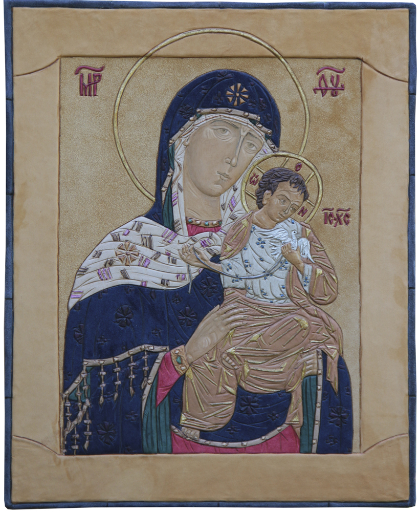

html>
Икона Божией Матери Коневская

Икона Божией Матери Коневская.
Кожа, сусальное золото.
48,5 x 39,5 см.
Mother of God Icon Konevskaya.
Leather, tinsel, gold leaf.
48,5 x 39,5 cm.
Ікона Божої Матері Коневська.
Шкіра, сусальне золото.
48,5 x 39,5 см.